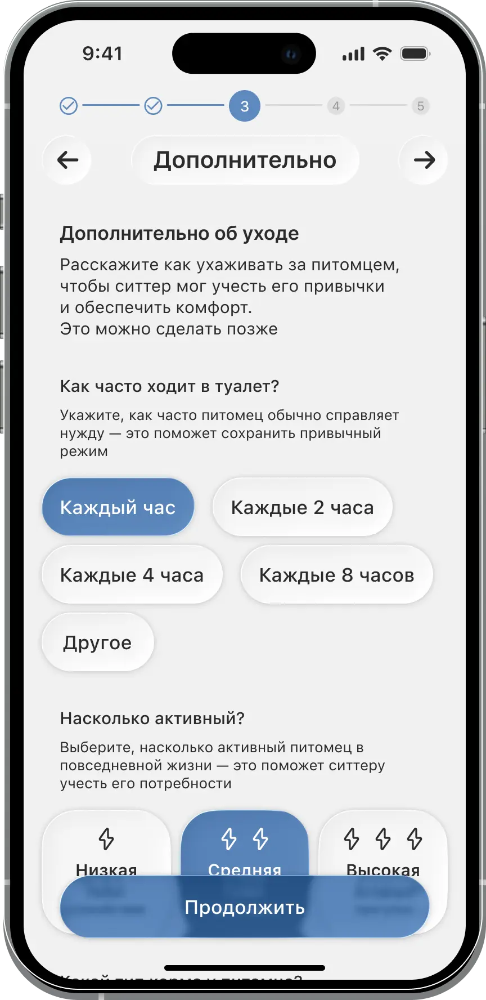
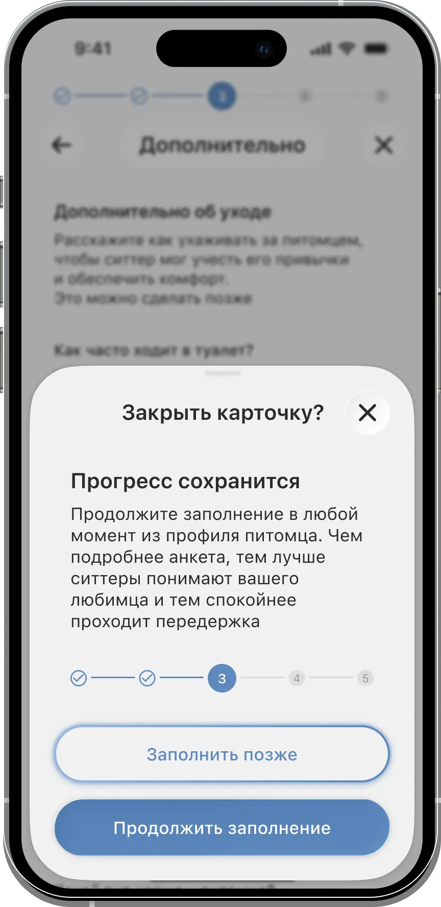
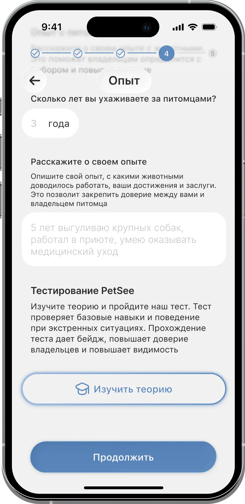
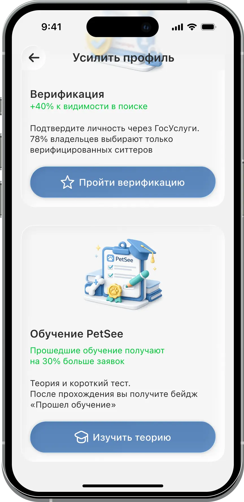
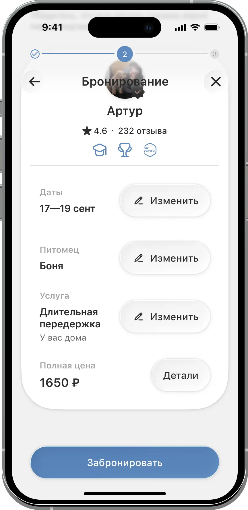
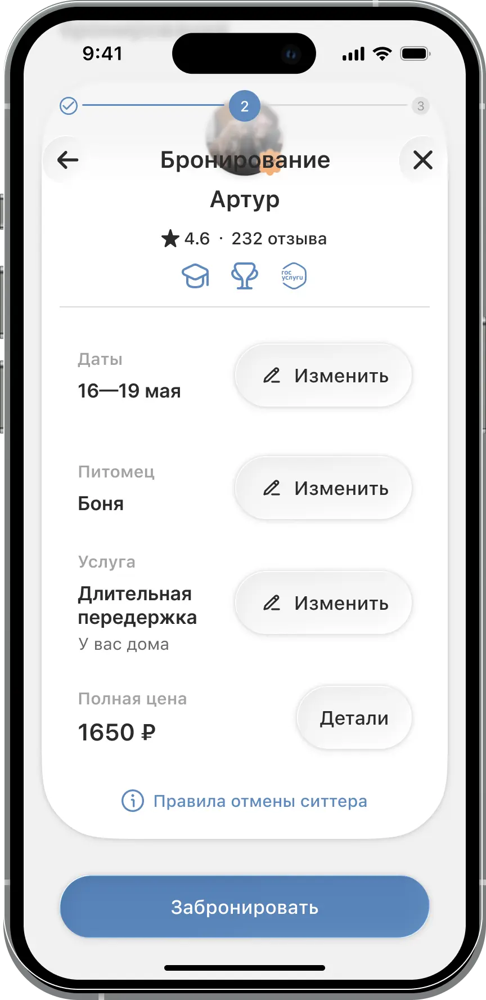

HMW после тестов
Пять проблем из юзабилити-тестов переформулировал в вопросы «Как мы могли бы…» и нашёл конкретные решения для каждого.
Смотреть артефакт в Figma →Высокий Стрелка «→» воспринималась как «пропустить» — 3/3 владельцев не завершили заполнение питомца
Как сделать так, чтобы пользователь понял, что данные питомца можно добавить позже — и не бросил бронирование?
Заменить стрелку «‹» на кнопку «Позже» с поясняющим тостом: «Добавьте данные питомца до начала передержки». Шаг остаётся необязательным, но намерение платформы становится очевидным.


Метрика: доля завершённых бронирований ≥ 70%
Высокий Экран верификации выглядел обязательным — 3/3 ситтеров остановились и не поняли, можно ли продолжить
Как показать, что верификация необязательна прямо сейчас, но усиливает профиль и увеличивает доверие?
Переименовать экран в «Усильте профиль», добавить описание выгод (больше заказов, выше в выдаче) и заметную кнопку «Позже». Убрать всё, что визуально напоминает обязательный чекпоинт.


Метрика: конверсия регистрации ситтера ≥ 80%
Высокий Условия отмены бронирования не были видны до экрана оплаты
Как убедиться, что пользователь прочитает и примет условия отмены до того, как деньги будут списаны?
Добавить блок с условиями отмены непосредственно на экран подтверждения оплаты — выше кнопки «Оплатить». Не отдельный экран, не мелкий текст, а читаемый блок с конкретными цифрами.


Метрика: снижение обращений в поддержку по теме отмен на 30%
Средний Карточка ситтера переворачивается, но 1/3 владельцев не догадались об этом
Как намекнуть пользователю, что за карточкой скрыта дополнительная информация?
Анимация-подсказка при первом открытии карточки: элемент слегка «приподнимается» и возвращается обратно в течение 1 секунды. Срабатывает один раз, не повторяется.
Приблизительная реализация — в финале карточка будет выглядеть как в макетах, анимация плавнее. Каждые 5 секунд — лёгкий намёк-переворот. По клику — полный разворот с расшифровкой бейджей.
Метрика: доля открытий обратной стороны карточки ≥ 60%
Средний Свайп-жест в ленте заявок неочевиден — 3/3 ситтеров нажимали вместо свайпа
Как дать ситтеру понять, что заявки принимают свайпом?
При первом открытии ленты первая карточка чуть сдвигается вправо — из-под неё появляется зелёная плашка «Принять». Через секунду всё возвращается на место. Один раз, без лишних объяснений.
Приблизительная реализация — в финале карточка будет выглядеть как в макетах. Каждые 5 секунд карточка сдвигается вправо и появляется плашка «Принять». Подсказка без лишних объяснений.
Метрика: доля ситтеров, использующих свайп в первую сессию ≥ 70%